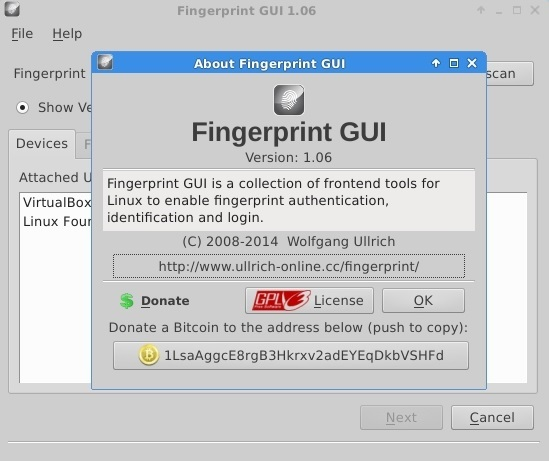
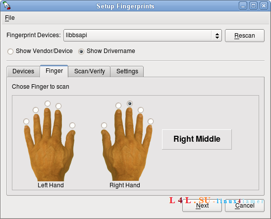
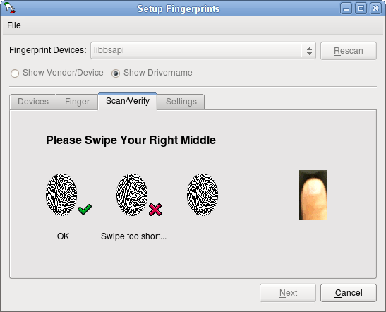
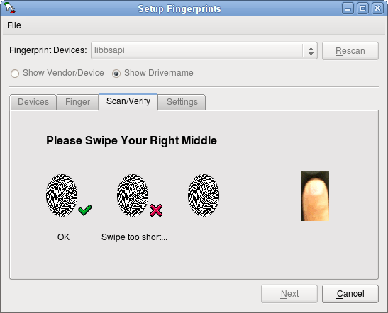
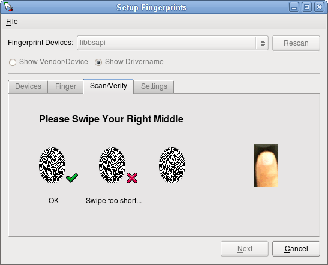

Fingerprint GUI is an application providing fingerprint-based authentication on Linux laptops. It features a simple GUI for fingerprint management and a PAM module.
It is based on the libfprint library. It enables recording and checking of fingerprint data and allows login and authentication of users by their fingerprint
using a fingerprint scanner. Additionally, you may install the bundled non-free libbsapi library. In this case Fingerprint GUI will automatically support all
fingerprint readers manufactured by UPEK, Inc. Fingerprint GUI is free software. You can use, modify, copy and distribute it under the terms and conditions of
the GNU General Public License (GNU GPLv3). The safety and reliability of the fingerprint-recognition depends very much on the hardware used, the associated
device drivers and the software used to verify the biometric data. According to the current state of the art fingerprint recognition for security-critical
applications is only limited suitable.


 


Choose your distro